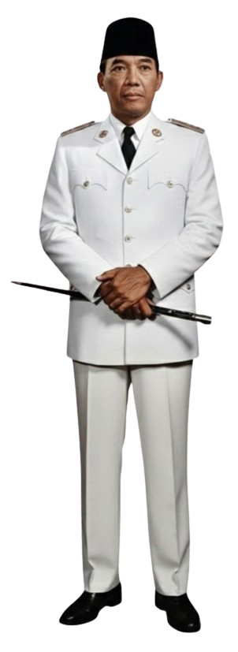

SOEKARNO
ACHIEVEMENT & LEGACY

Mendirikan Partai Nasional Indonesia (PNI) untuk memperjuangkan kemerdekaan Indonesia.
Proklamasi kemerdekaan Indonesia dan perjuangan menuju kemerdekaan.
Soekarno menjadi salah satu tokoh penting dalam Konferensi Asia Afrika.
Soekarno menyampaikan gagasan mengenai dasar negara Indonesia.